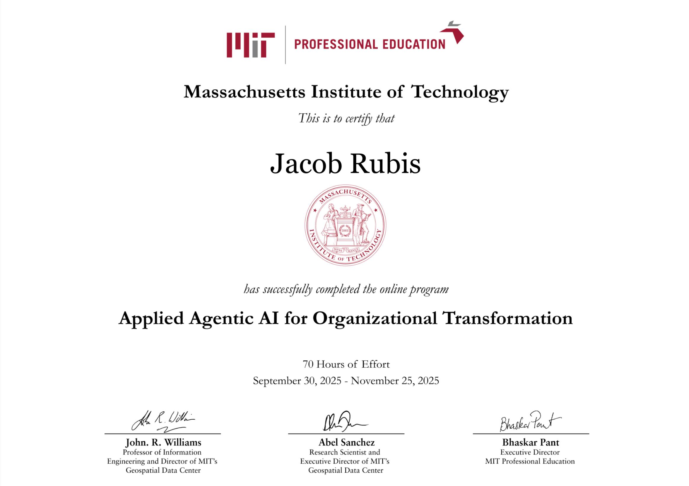

Career Profile — Summary
- Proven across Mid-Market, Commercial, and Enterprise — covered all 3 segments.
- Last 5 quarters: among the highest attainers on my team.
- Last 4 quarters: exceeded quota in consecutive quarters.
- Process-first — enablement impact beyond my role, tools others use daily.
- Coachable, curious, and quick to implement feedback to improve outcomes.
- I aim to improve the team's success rate, not just my own.
Strategic account planning following the 9-box style.
Try Here ↗Evaluates target companies against ServiceNow customers in the same industry — creates a credible story you can tell prospects.
Try Here ↗Shared workspace for the account team to track all activity and updates for big bet accounts — one link, live updates.
Try Here ↗Mock discovery and objection handling with positive feedback; actively used by one commercial outbound team.
Try Here ↗Standardized briefing template for intro calls with key context and prep.
Try Here ↗Converts discovery notes into structured SPICED summaries and client-ready follow-ups.
Try Here ↗Creates tailored, credible emails and talk tracks fast from verifiable inputs.
Try Here ↗Turns scattered research and notes into a standardized briefing with key players, context, pains, and goals.
Try Here ↗Generates a concise sales brief to drive outreach topics and support account plan building.
Try Here ↗Helps SDRs re-engage stalled opportunities with personalized, resource-led outreach.
Try Here ↗Ramp new hires faster and increase phone confidence. Speak to the platform by product and job level with a full conversation tree.
Try Here ↗
AI Listening Tour
June 2025
Read more ›
- Collaborated with leaders to design supporting materials — including data sheets, slides, and demos — for Kristen McCormack's presentation to Chief Digital Information Officer Kellie Romack, showcasing innovation and practical AI enablement.
AI Native: Using AI Responsibly
Oct 7 — Global GSD
Read more ›
- Shared real examples of how SDRs can use ChatGPT to accelerate research, writing, and outreach while protecting confidential data.
- Explained the difference between public and internal information, demonstrated how to adjust ChatGPT's data controls, and outlined risks like prompt injection and Shadow AI.
ESA AI Summit
Oct 15 — Boston · Led by Chris Sousa (Director of ESA)
Read more ›
- 45-minute session alongside Will Doerr showcasing GPT workflows I've built and inspiring ESAs to design their own custom automations aligned to day-to-day work.
- Live demos of sales-workflow GPTs and how they're assembled.
- Practical prompts and templates they can adapt immediately.
GSD: Pipeline Progression
Oct 21 — Global GSD
Read more ›
- Presented a Pipeline Progression framework for SDRs to re-engage and move stalled opportunities forward, plus a custom tool that operationalizes the approach.
- Light, resource-led, empathetic multi-touch sequences with clear criteria for next best action and handoffs.
Dave Barto: Commercial Central All Hands
February 2026 — Commercial Central
Read more ›
- Presented to the Commercial Central organization on a BDR-built account planning workflow — built originally in ChatGPT, then migrated to Claude to unlock integrations with Dynamics, Snowflake, and the SSC that weren't possible before.
- Showed how the team can generate comprehensive, research-backed account plans in under 20 minutes tailored to ServiceNow value — all in one HTML deliverable, with no manual research required.
- Working to get the workflow added as an organizational skill to increase shareability and ease of use across the broader sales org.
MIT: Applied Agentic AI for Organizational Transformation
September 30 – November 25, 2025
Read more ›
Completed MIT's Applied Agentic AI for Organizational Transformation course (70 hours). Practical frameworks and real-world applications to elevate how teams use AI to streamline workflows and drive measurable impact.
